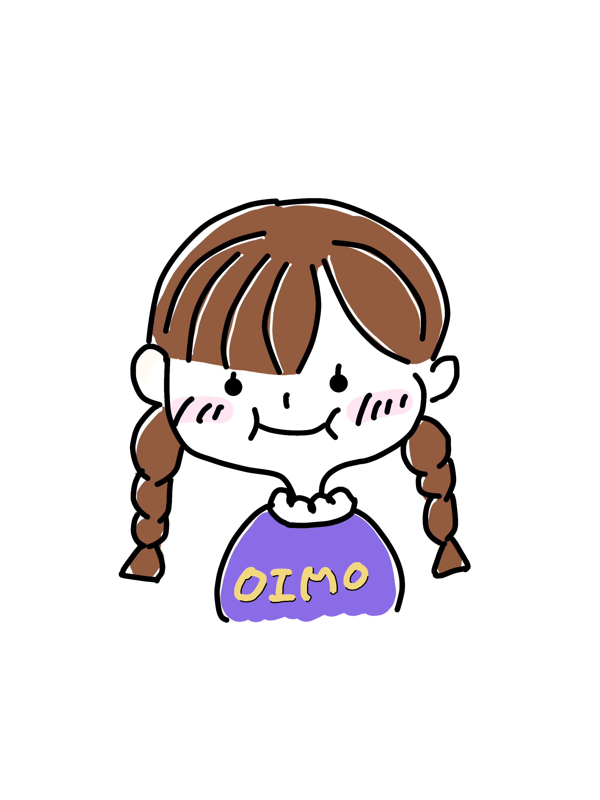

♡さつまいもマッチング♡
～あなたとさつまいもの新たな出会いをサポート～
さつまいもマッチングはあなたにぴったりのさつまいもをみつけるためのツールです。最大５つの質問に答えるだけでぴったりのさつまいもを見つけます。マッチングはさつまいもの代表格である、紅はるか、安納芋、シルクスイート、ベニアズマ、鳴門金時、ふくむらさきの６種から選ばれます。自分好みのさつまいもを見つけて素敵なさつまいもライフを！
Let’t Start！

さつまいもマッチングはあなたにぴったりのさつまいもをみつけるためのツールです。最大５つの質問に答えるだけでぴったりのさつまいもを見つけます。マッチングはさつまいもの代表格である、紅はるか、安納芋、シルクスイート、ベニアズマ、鳴門金時、ふくむらさきの６種から選ばれます。自分好みのさつまいもを見つけて素敵なさつまいもライフを！